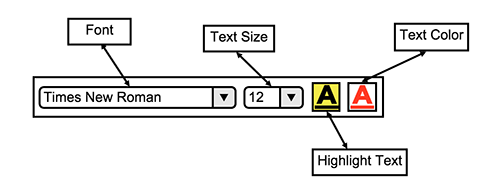
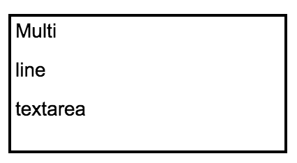

The text tool gives the user the ability to type in text into the canvas and modify the text.
In response to the user clicking the text tool icon, the overall toolbar is replaced and displays options for text editing. An overview of the text options toolbar is shown in Figure 56.

Figure 56: Text Toolbar Overview.
The text editing toolbar has several options including:
In addition to the toolbar, a text box appears in the canvas which is resizable. An example of the textbox in the canvas is shown in Figure 57.

Figure 57: Example of Text box.